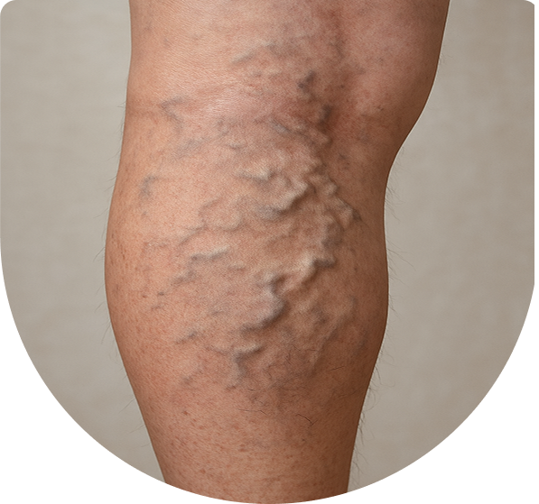

Diagnosis of Varicose Veins
Physicians usually begin with a visual and physical examination,
assessing vein patterns and swelling. Diagnostic tools include:

Varicose veins are enlarged, twisted veins that often appear on the legs and can cause discomfort or cosmetic concerns. Affecting up to 20% of adults, varicose veins can worsen if untreated, highlighting the importance of early diagnosis and management for improved vein health and prevention of complications. Primary keywords: varicose veins, vein treatment.
Varicose veins are enlarged, twisted veins that often appear on the legs and can cause discomfort or cosmetic concerns. Affecting up to 20% of adults, varicose veins can worsen if untreated, highlighting the importance of early diagnosis and management for improved vein health and prevention of complications. Primary keywords: varicose veins, vein treatment.



Family history increases susceptibility.
Increased blood volume and pressure on leg veins.
Risk rises as veins lose elasticity over time.
Excess weight puts additional strain on veins.
Women are more likely affected due to hormonal changes.
Occupations or habits that reduce circulation.
Ignoring varicose veins can lead to serious health problems that worsen over time. Early intervention helps prevent complications and improves overall quality of life.
Blue or purple veins visible under the skin, usually larger than spider veins.
Tiny, web-like red or blue clusters near the skin surface.
Develop independently without another underlying health condition.
Caused by another disorder, such as deep vein thrombosis (DVT).
Physicians usually begin with a visual and physical examination,
assessing vein patterns and swelling. Diagnostic tools include:
Checks blood flow and detects valve problems.
Combines ultrasound imaging with blood flow analysis for detailed assessment.
Ignoring varicose veins can lead to serious health problems that worsen over time. Early intervention helps prevent complications and improves overall quality of life.
Blue or purple veins visible under the skin, usually larger than spider veins.
Tiny, web-like red or blue clusters near the skin surface.
Develop independently without another underlying health condition.
Caused by another disorder, such as deep vein thrombosis (DVT).
If untreated, varicose veins can lead to serious issues:
Seek prompt medical attention if experiencing:
Recognizing the symptoms and risk factors of varicose veins is crucial for early and effective intervention to prevent progression and complications. Varicose veins occur due to weakened or damaged vein valves that cause blood to pool, leading to enlarged, twisted veins usually visible on the legs. Major risk factors include family history, aging, female gender and hormonal changes (such as during pregnancy or menopause), obesity, prolonged standing or sitting, and a sedentary lifestyle. Additionally, genetic predispositions and certain occupational factors contribute to the likelihood of developing varicose veins. Understanding these factors helps identify those at higher risk who may benefit from early consultation and preventive strategies.
Got a question?
Cover Symptoms, Causes, Prevention, And Treatments, Which Range From Self-Care Like Exercise And Compression Stockings To Medical Procedures Such As Sclerotherapy (Injections), Radiofrequency Ablation, And Laser Therapy.
Treatments are generally safe, minimally invasive, and designed to cause little to no pain.
Minor muscle strains might take weeks to months, while severe surgery could take many months to a year for complete recovery. With factors like age, overall health, the extent of the issue, and access to treatment or therapy playing a crucial role.
Recurrence can happen, but advanced treatments significantly lower the chances.
Most insurance plans cover treatment if it is medically necessary. Cosmetic procedures may not be covered.